第五篇 系统篇
第十章 PE文件格式
-
主要文件：
winnt.h -> image format -
PE布局
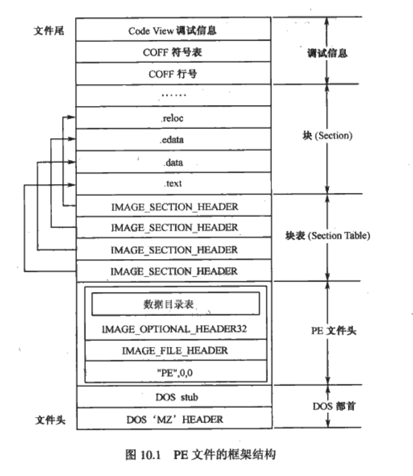
10.1 PE的基本概念
- 磁盘文件偏移和内存偏移的转换
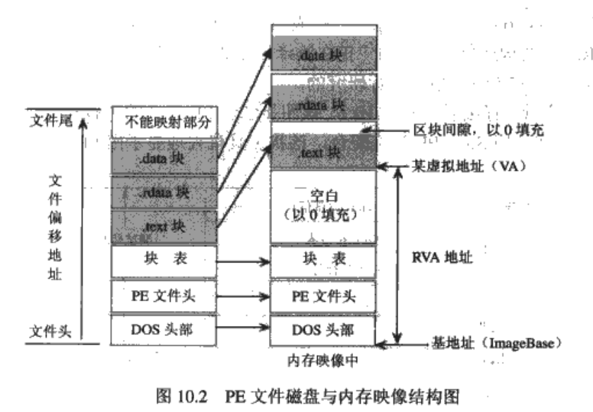
10.1.1 基地址
-
模块：加载到内存中的PE文件被称为模块
-
模块句柄（hModule）：映射文件的起始地址，这个初始内存地址也称作基地址（ImageBase）
-
访问DLL文件,得到指针：
c
HMODULE GetModuleHandle(LPCTSTR lpModuleName);
10.1.2 相对虚拟地址
相对地址（RVA）：内存中，相对于ImageBase的偏移
目标地址401000h - 装入地址 400000h = RVA 1000h
虚拟地址(VA) = 基地址（Image Base） + 相对虚拟地址（RVA）
10.1.3 文件偏移地址
FileOffset/RawOffset:PE文件存储在磁盘上时，相对于文件头的偏移，起始值时0
10.2 MS-DOS头部
DOS头部 = DOS MZ 头 + DOS stub
typedef struct _IMAGE_DOS_HEADER { // DOS .EXE header
WORD e_magic; // Magic number
WORD e_cblp; // Bytes on last page of file
WORD e_cp; // Pages in file
WORD e_crlc; // Relocations
WORD e_cparhdr; // Size of header in paragraphs
WORD e_minalloc; // Minimum extra paragraphs needed
WORD e_maxalloc; // Maximum extra paragraphs needed
WORD e_ss; // Initial (relative) SS value
WORD e_sp; // Initial SP value
WORD e_csum; // Checksum
WORD e_ip; // Initial IP value
WORD e_cs; // Initial (relative) CS value
WORD e_lfarlc; // File address of relocation table
WORD e_ovno; // Overlay number
WORD e_res[4]; // Reserved words
WORD e_oemid; // OEM identifier (for e_oeminfo)
WORD e_oeminfo; // OEM information; e_oemid specific
WORD e_res2[10]; // Reserved words
LONG e_lfanew; // File address of new exe header
} IMAGE_DOS_HEADER, *PIMAGE_DOS_HEADER;
- e_magic：MZ
- e_lfanew: PE头的真正偏移量
10.3 PE文件头
PNETHeader = ImageBase + dosHeaser->e_lfanew
typedef struct _IMAGE_NT_HEADERS {
DWORD Signature;
IMAGE_FILE_HEADER FileHeader;
IMAGE_OPTIONAL_HEADER32 OptionalHeader;
} IMAGE_NT_HEADERS32, *PIMAGE_NT_HEADERS32;
10.3.1 Signature字段
作用：用来验证该文件是否时PE文件
#define IMAGE_NT_SIGNATURE 0x00004550 // PE00
10.3.2 IMAGE_FILE_HEADER结构
typedef struct _IMAGE_FILE_HEADER {
WORD Machine;
WORD NumberOfSections;
DWORD TimeDateStamp;
DWORD PointerToSymbolTable;
DWORD NumberOfSymbols;
WORD SizeOfOptionalHeader;
WORD Characteristics;
} IMAGE_FILE_HEADER, *PIMAGE_FILE_HEADER;
字段：
- SizeOfOptionalHeader：OptionalHeader字段的大小 重要
- Characteristics：
- 普通exe文件：010fh
- DLL文件：0210h
10.3.3 IMAGE_OPTIONAL_HEADER结构
typedef struct _IMAGE_OPTIONAL_HEADER {
//
// Standard fields.
//
WORD Magic;
BYTE MajorLinkerVersion;
BYTE MinorLinkerVersion;
DWORD SizeOfCode;
DWORD SizeOfInitializedData;
DWORD SizeOfUninitializedData;
DWORD AddressOfEntryPoint;
DWORD BaseOfCode;
DWORD BaseOfData;
//
// NT additional fields.
//
DWORD ImageBase;
DWORD SectionAlignment;
DWORD FileAlignment;
WORD MajorOperatingSystemVersion;
WORD MinorOperatingSystemVersion;
WORD MajorImageVersion;
WORD MinorImageVersion;
WORD MajorSubsystemVersion;
WORD MinorSubsystemVersion;
DWORD Win32VersionValue;
DWORD SizeOfImage;
DWORD SizeOfHeaders;
DWORD CheckSum;
WORD Subsystem;
WORD DllCharacteristics;
DWORD SizeOfStackReserve;
DWORD SizeOfStackCommit;
DWORD SizeOfHeapReserve;
DWORD SizeOfHeapCommit;
DWORD LoaderFlags;
DWORD NumberOfRvaAndSizes;
IMAGE_DATA_DIRECTORY DataDirectory[IMAGE_NUMBEROF_DIRECTORY_ENTRIES];
} IMAGE_OPTIONAL_HEADER32, *PIMAGE_OPTIONAL_HEADER32;
字段：
-
Magic
-
ROM映像：0107h
- 普通可执行的映像：010Bh
-
PE32+：020Bh
-
SizeOfCode
-
多数文件只有一个code块，所以这个字段和.text的大小匹配
-
SizeOfUninitializedData
未初始化数据通常位于.bss段
- AddressOfEntryPoint
程序执行入口的RVA
- BaseofCode
代码段的RVA，通常为1000h
PS: 查看了本书的几个示例：
- pe.exe和pediy.exe的入口地址和代码基址是相同的
-
tls.exe和delaydll.exe的入口地址和代码基址是不同的
-
[ ] 进一步研究原因
-
BaseOfData：数据段的起始RVA
-
ImageBase：映像基址
-
SectionAlignment：装入内存时的区块对齐大小，默认是目标CPU的页尺寸，win98/me上，最小一页是1000h
-
FileAlignment：磁盘上PE文件的对齐大小，对x86，通常是200h或者1000h
-
SizeOfImage：装入内存后的总尺寸
-
SizeOfHeaders：MS-DOS头、PE头、区块表的组合尺寸
-
NumberOfRvaAndSizes: 数据目录的项数：16
-
DataDirectory[16]: 数据目录表，单个项目的结构如下：
```c typedef struct _IMAGE_DATA_DIRECTORY { DWORD VirtualAddress; DWORD Size; } IMAGE_DATA_DIRECTORY, *PIMAGE_DATA_DIRECTORY;
```
项目如下：
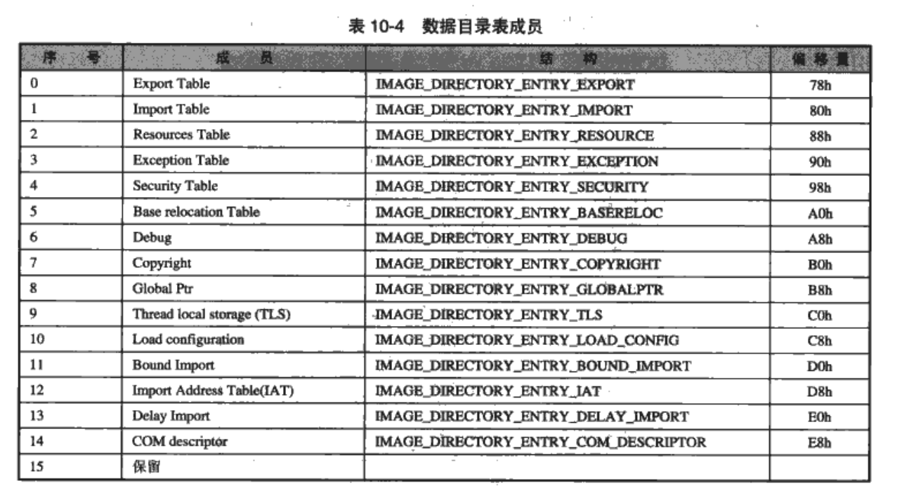
10.4 区块
10.4.1 区块表
- 结构：
c
typedef struct _IMAGE_SECTION_HEADER {
BYTE Name[IMAGE_SIZEOF_SHORT_NAME];
union {
DWORD PhysicalAddress;
DWORD VirtualSize;
} Misc;
DWORD VirtualAddress;
DWORD SizeOfRawData;
DWORD PointerToRawData;
DWORD PointerToRelocations;
DWORD PointerToLinenumbers;
WORD NumberOfRelocations;
WORD NumberOfLinenumbers;
DWORD Characteristics;
} IMAGE_SECTION_HEADER, *PIMAGE_SECTION_HEADER;
示例：
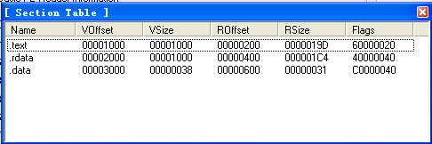
-
name：块名
-
VirtualSize（VSize）：实际的、被使用的区块大小，是区块在没被对齐处理之前的大小
-
VitrualAddress（Voffset）：装载到内存中的RVA，按照内存对齐，默认为1000h
-
SizeOfRawData（Rsize）：在磁盘中的大小，经过了对齐，FileAlignment默认大小为200h
-
PointerToRawData（Roffset）：磁盘文件中的偏移。如果程序自装载，这个字段比VitrualAddress更重要
-
Characteristics：
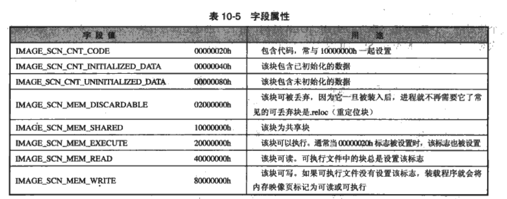
这里指定了区块的可读、可写、可执行属性
10.4.2 各种区块的描述
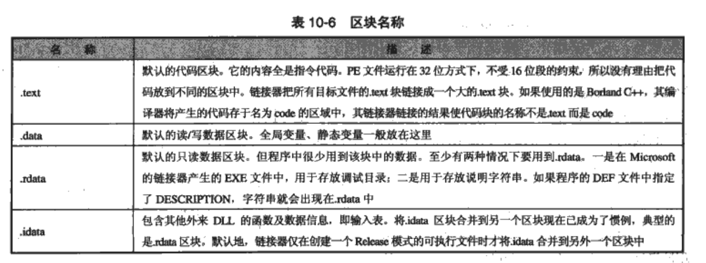
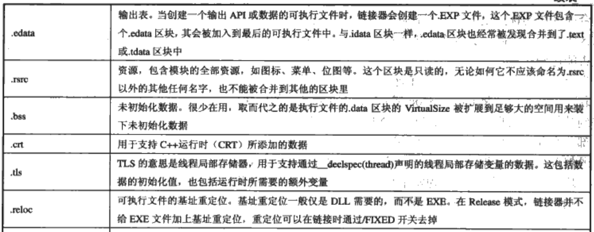
-
本章未涉及到的区块从略
-
自定义区块，在vc++中：
c
#prama data_seg("My_Data")
定义后，vc++处理的所有数据都会放到上述的区块中，而不是默认的.data区块中
-
区块的形成：链接器从全部obj中提取相似一致属性的块合并成一个块
-
链接器合并区块：使用
/merge开关
/MERGE:.rdata=.text ;将rdata段和text段合并
10.4.3 区块的对齐值
-
对齐值种类
-
内存对齐
默认对齐值：1000h（4KB）
-
磁盘文件对齐
典型对齐值：200h
10.4.4 文件偏移与虚拟地址转换
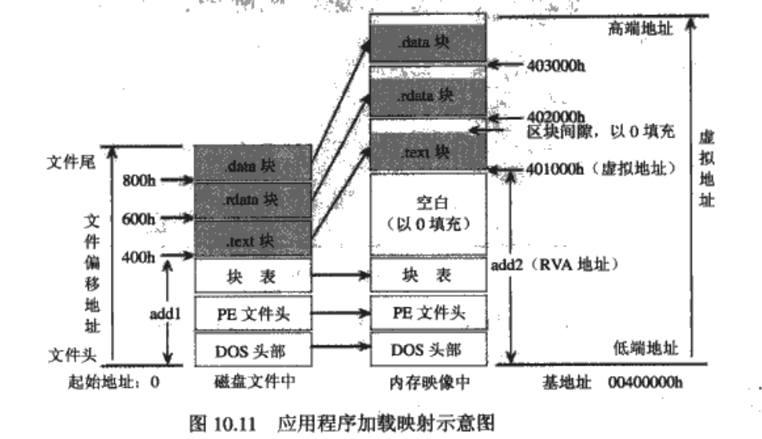
- 关系：
File Offset = RVA - k
File Offset = VA - Imagebase - k
- 各区段偏移量
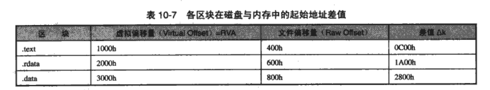
10.5 输入表
- 输入：可执行文件使用来自其他DLL的代码或者数据时，称为输入
- 作用：定位所有被输入的函数和数据，让正在被装入的文件可以使用这些地址，windows加载器就需要使用输入表（improt table，IT，导入表）
10.5.1 输入函数的调用
-
调用方式
-
隐式调用
由windows加载器完成
-
显式调用
由程序自己调用LoadLibrary和GetProcessAddress完成
-
输入地址表（IAT）
-
调用一个输入函数的实际过程
- 默认方式
asm CALL DWORD PTR [00402010]地址
00402010位于IAT中，但实际的调用代码如下：asm Call 00401164 ... :00401164 jmp dword ptr [00402010]- 问题：代码低效
- 原因：
- 编译器无法识别输入函数的调用和普通函数的调用
-
编译器生成类似
call xxxxxx的指令，而xxxxxx需要由链接器填充，该指令不是从函数指针处得来，而是从代码的实际地址而来，为了因果平衡，简单的方法就是产生上述的jmp stub -
优化：
使用
__declspec(dllimport)修饰函数，得到的指令形式如下：asm CALL XXXXXXXX
10.5.2 输入表结构
- 头文件定义
```asm typedef struct _IMAGE_IMPORT_DESCRIPTOR { union { DWORD Characteristics; // 0 for terminating null import descriptor DWORD OriginalFirstThunk; // RVA to original unbound IAT (PIMAGE_THUNK_DATA) }; DWORD TimeDateStamp; // 0 if not bound, // -1 if bound, and real date\time stamp // in IMAGE_DIRECTORY_ENTRY_BOUND_IMPORT (new BIND) // O.W. date/time stamp of DLL bound to (Old BIND)
DWORD ForwarderChain; // -1 if no forwarders
DWORD Name;
DWORD FirstThunk; // RVA to IAT (if bound this IAT has actual addresses)
} IMAGE_IMPORT_DESCRIPTOR; typedef IMAGE_IMPORT_DESCRIPTOR UNALIGNED *PIMAGE_IMPORT_DESCRIPTOR;
```
- 结构图
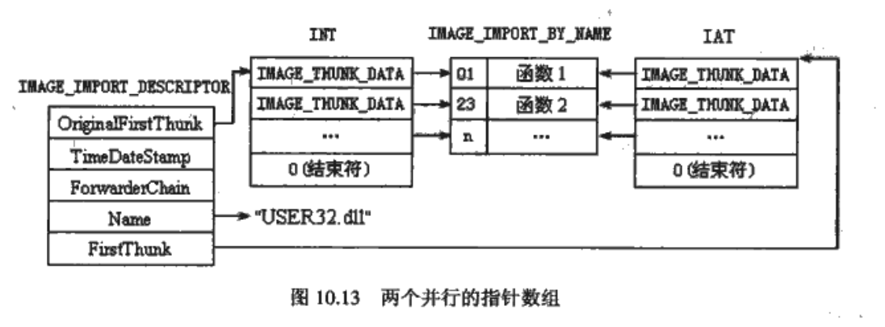
- IMAGE_THUNK_DATA 的定义如下
c
typedef struct _IMAGE_THUNK_DATA32 {
union {
DWORD ForwarderString; // PBYTE
DWORD Function; // PDWORD
DWORD Ordinal;
DWORD AddressOfData; // PIMAGE_IMPORT_BY_NAME
} u1;
} IMAGE_THUNK_DATA32;
typedef IMAGE_THUNK_DATA32 * PIMAGE_THUNK_DATA32;
-
ForwarderString：
可以看出，INT和IAT其实都是链表结构，
ForwarderString指针指向下一个表项，其结构也是IMAGE_THUNK_DATA -
AddressOfData：指向函数名，这里包含在数据结构
IMAGE_IMPORT_BY_NAME中 -
IMAGE_IMPORT_BY_NAME的定义
c
typedef struct _IMAGE_IMPORT_BY_NAME {
WORD Hint;
BYTE Name[1];
} IMAGE_IMPORT_BY_NAME, *PIMAGE_IMPORT_BY_NAME;
10.5.3 输入地址表（IAT）
- IAT和INT结构相同是否是重复？
INT表（又称为提示名表Hint-name Table）不可以改写，IAT由PE装载器重写
-
执行流程
-
PE装载器首先搜索
OriginalFirstThunk -
如果找到，加载器迭代搜索数组中的每一个指针（
*PIMAGE_IMPORT_BY_NAME），依据其中的函数名Name找到其指向的输入函数的地址 -
找到地址之后，会将IAT表中
IMAGE_IMPORT_BY_NAME中的Name字段替换为真实的函数地址，这个时候，IT结构中除了IAT表之外的结构就已经不需要了 -
PE加载器加载完成的图如下所示：
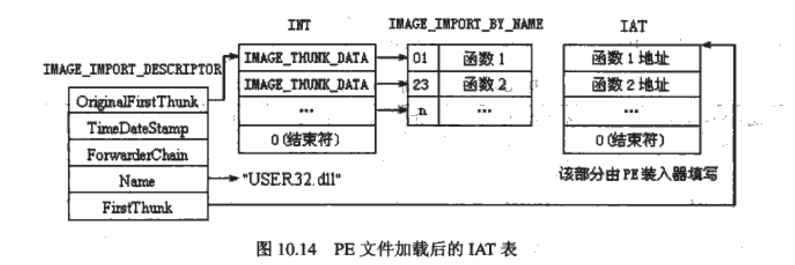
-
例外情况
-
函数仅由序号引出
- 不能用函数名调用，只能通过他们的位置调用
- 将
IMAGE_THUNK_DATA的最高二进位设置为1，用低字节指示函数序数
- orignalFirstThunk的值为0
- 使用
FirstThunk来替代orignalFirstThunk的作用 - [ ] 这里不是很懂，以后再来分析
- 使用
10.5.4 输入表实例分析
-
分析pe.exe
-
确定IT表的位置
IT指针RVA : B0h(相对pe头的偏移) + 80h（pe头的RVA） = 130h
-
计算IT表的物理位置（包含多个IDD项）
130h处的四字节为：40 20 00 00
即地址为
00002040h2040h位于.rdata段，虚拟偏移和物理偏移的差值k=2000h-600h=1A00h2040h的物理偏移：2040h - 1A00h = 640h
-
读取IT表的内容
定位到640h处，可以看到其IDD内容，每个IDD有五个双字
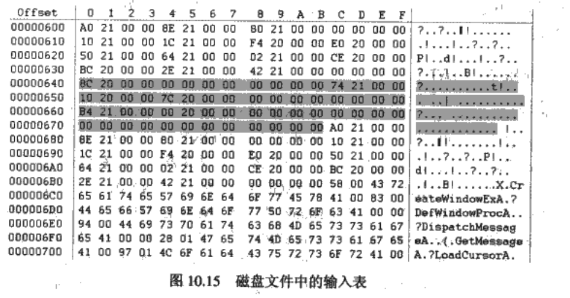
整理后的结果：
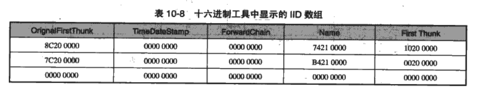
-
确定Name名称
以第一个为例：
-
Name字段的值为
74210000，转换成RVA：00002174h，转换成物理偏移：774h -
查看该处地址值，为：USER32.dll
-
查找后的数组如下
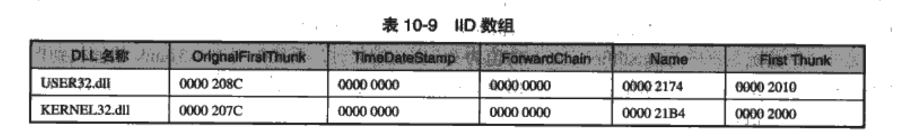
-
-
查找USER32.dll中被调用的函数
-
查看IDD的OriginalFirstThunk字段
208ch，计算得到物理偏移208ch-1A00h=68Ch -
在
68Ch处找到IMAGE_THUNK_DATA数组，它存储着指向_IMAGE_IMPORT_BY_NAME结构的指针，结果如下：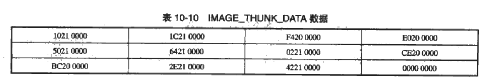
-
查看同一IDD的
FirstThunk，在其偏移处610h（2010h - 1A00h）得到IMAGE_THUNK_DATA，和上表中的字段 ==完全一致==PS：这是书中的说法，但我实际测试发现，其实610h处是一段字符串，并不一致，如下：
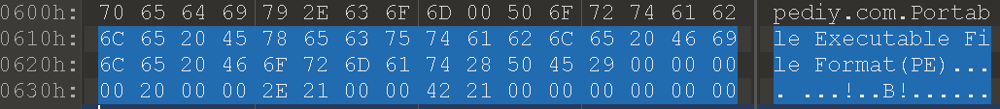
pe.exe也是使用书中给出的样本，感觉这里作者可能有错误，如果大家发现了是我的问题，还请不吝赐教:thinking:
-
先看前两个函数调用
- 2100h - 1A00h = 710h，该处地址字符串为：LoadIconA
- 211Ch - 1A00h = 71Ch，该处地址字符串为：PostQuitMessage
-
最后得到所有的函数引用：
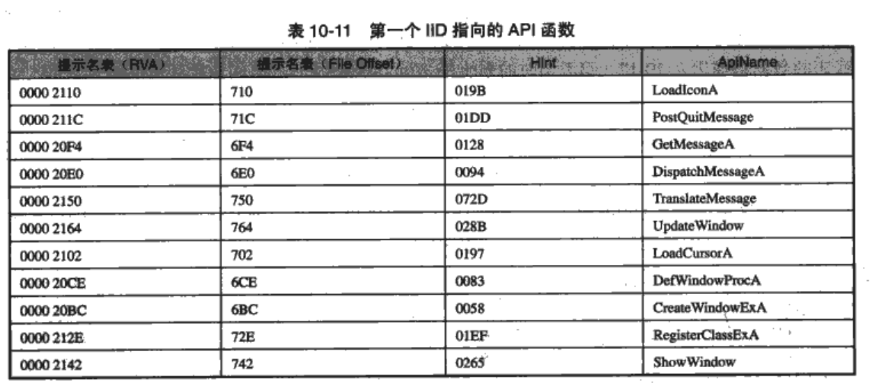
-
得到第一个IDD在PE加载器运行前的结构
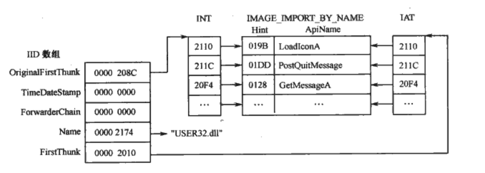
-
-
查看dump.exe，其为抓取的IDD加载完成后的内存印象
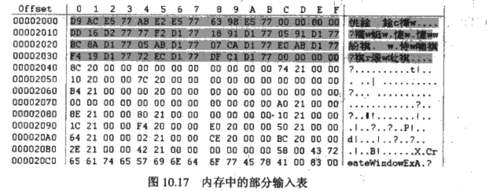
-
可以发现，其值已经发生了变化，得到下列表格：
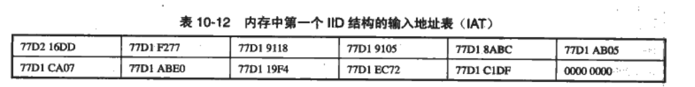
-
查看
77D216DDh地址处的反汇编代码：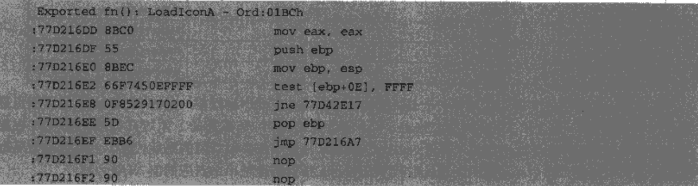
发现就是LoadIconA处的代码
-
pe.exe装载到内存之后的IDD结构示意图如下：
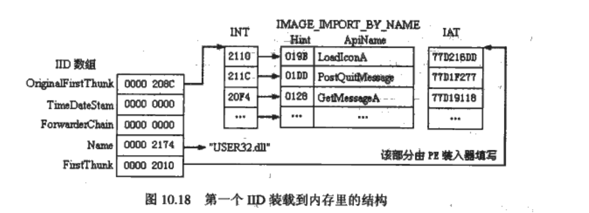
-
调用LoadIconA的代码如下：
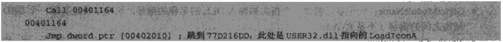
10.6 绑定输入
- 产生的原因：
查找替换函数地址的过程，需要很多的时间
- 解决办法：
提前将实际地址加载到IAT表中
-
前提条件：
-
进程初始化时，需要的DLL实际已经加载到了它们的首选基址
-
绑定之后，DLL输出表中引用符号的位置一致没有改变
-
如果出现地址改变，怎么办
加载器从INT表中找到需要信息，重新读取正确的地址
- 绑定输入位置：
DataDirectory的第11个成员指向，以_IMAGE_BOUND_IMPORT_DESCRIPTOR结构的数组开始
c
typedef struct _IMAGE_BOUND_IMPORT_DESCRIPTOR {
DWORD TimeDateStamp; 被输入DLL的时间，以便加载器快速判断绑定是不是最新的
WORD OffsetModuleName; 指向被输入DLL的名称的偏移，与第一个IBID结构之间的偏移
WORD NumberOfModuleForwarderRefs; 其后ModuleForwarderRefs的数目
// Array of zero or more IMAGE_BOUND_FORWARDER_REF follows
} IMAGE_BOUND_IMPORT_DESCRIPTOR, *PIMAGE_BOUND_IMPORT_DESCRIPTOR;
PS：该节内容不大理解，以后用到了再研究
10.7 输出表
10.7.1 输出表结构 287
- IED结构定义
```CQL typedef struct _IMAGE_EXPORT_DIRECTORY { DWORD Characteristics; DWORD TimeDateStamp; WORD MajorVersion; WORD MinorVersion; DWORD Name; //DLL的名称 DWORD Base; //起始序数值，正常为1，查询输出函数时，将该值减去，得到进入EAT的索引 DWORD NumberOfFunctions; //EAT中的条目数量 DWORD NumberOfNames; //ENT表中的条目数量 DWORD AddressOfFunctions; // EAT的RVA DWORD AddressOfNames; // ENT的RVA DWORD AddressOfNameOrdinals; // 输出序数表的RVA } IMAGE_EXPORT_DIRECTORY, *PIMAGE_EXPORT_DIRECTORY;
```
- 典型输出表图
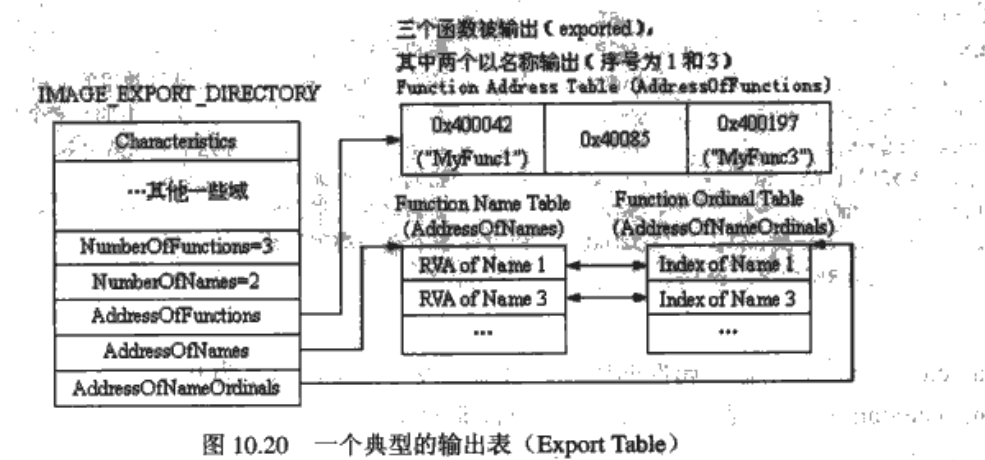
- 输出序数表起到联系名称表和地址表的作用
- 输出序数表和名称表一一对应，一同使用，加载器取到名称的同时，也取到了索引
- 取到索引后，就可以访问输出表了
10.7.2 输出表结构实例分析
以DllDemo.dll为例
-
数据目录表的第一个成员指向输出表，位于pe文件头的78h偏移处
-
pe文件头起始位置为100h，得到输出表位置178h（100h+78h）
-
查看该位置，发现值为
0040000，得到内存偏移地址，再转化成物理地址0C00h -
查看该地址处的内容，其结构为
_IMAGE_EXPORT_DIRECTORY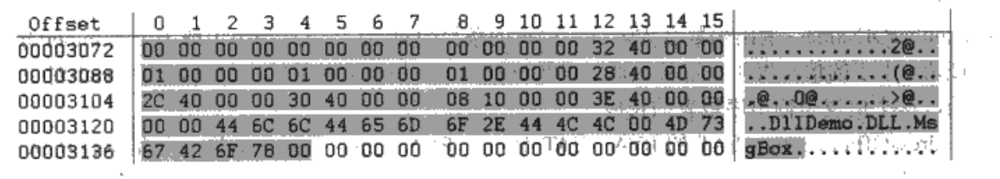
- 整理后如下：
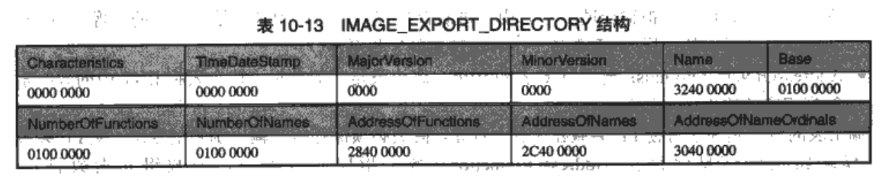
-
name:指向DLL的名字
- addressOfNames：指向函数名列表
-
AddressOfNameOrdinals：序号名列表
-
调用MsgBox工作过程：
- 定位
_IMAGE_EXPORT_DIRECTORY，找到ENT地址，知道这个数组里只有1个条目 - 对名字进行二进制查找，直到找到该函数
- 直到该函数的序号为1，于是在序号表中读取第一个值，即为MsgBox的输出序数
- 使用输出序数进入EAT索引，得到MsgBox的RVA：1008h
- 加上DllDemo的装入地址，得到MsgBox的实际地址
10.8 基址重定位
10.8.1 基址重定位概念
-
重定位方式：把文件中所有可能需要修改的地址放在一个数组里
-
以DllDemo.dll为例
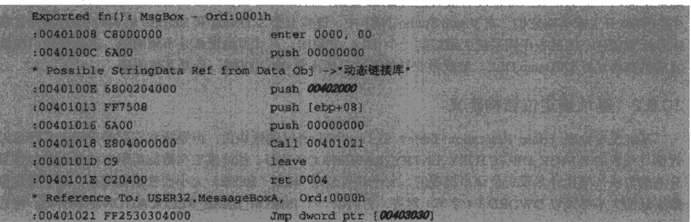
-
dll的基址为400000h，
0040100E地址处指令中入栈地址的RVA为2000h -
如果dll的基址能按照400000h的地址正确加载，则指令形式不变
-
如果windows加载器决定将其映射到870000h处，加载器会比较基址和实际装入的地址，计算处差值：470000h（870000h-400000h）
-
这样，
0040100E地址处的指令就会被修正为：push 872000 -
示意图如下：
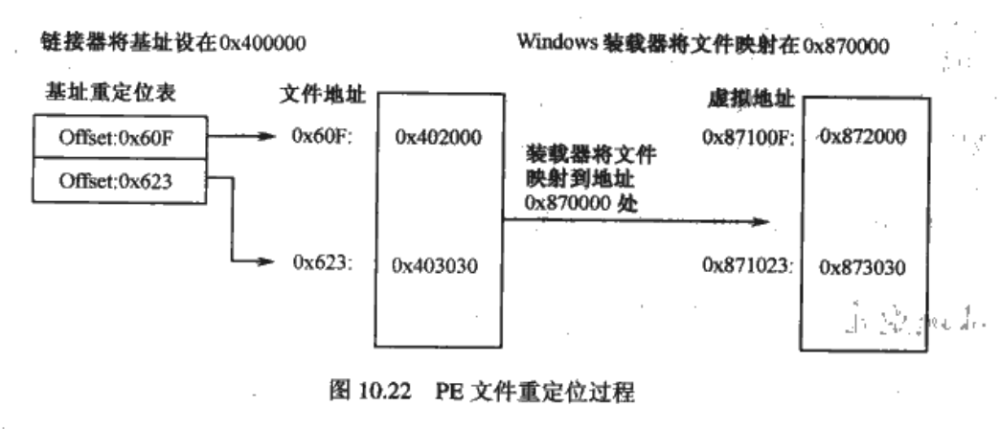
-
重定位后的代码如下：
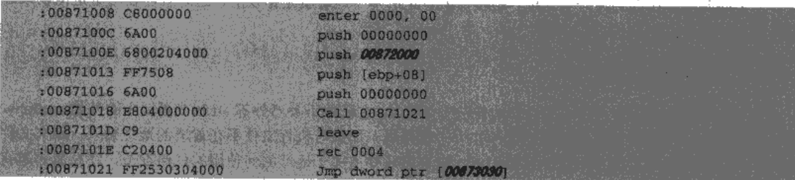
-
exe不需要重定位，但dll会使用宿主exe的空间，所以必须包含重定位信息
10.8.2 基址重定位结构定义
- 区块名：.reloc
- 查找方式：数据目录表中的
BaseRelocationTable - 组织方式：按页分割，多个重定位块链接而成
- 块大小：4KB，必须以4字节对齐
- 头文件定义
typedef struct _IMAGE_BASE_RELOCATION {
DWORD VirtualAddress; //这一组重定位数据的开始RVA，各重定向的地址必须加上这个RVA才是重定向的完整RVA
DWORD SizeOfBlock; //当前重定位结构的大小
WORD TypeOffset[1]; //数组，分高4位和低12位，高4位代表重定位类型，低12位代表重定位地址
//该地址与VirtualAddress相加，就得到需要修改数据的地址的指针
} IMAGE_BASE_RELOCATION;
typedef IMAGE_BASE_RELOCATION UNALIGNED * PIMAGE_BASE_RELOCATION;
- 示意图
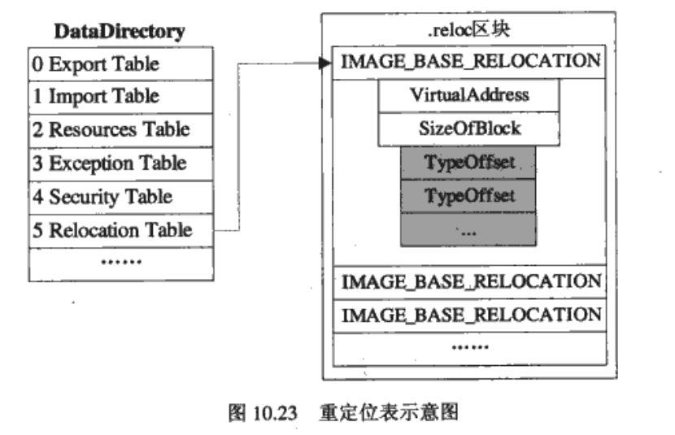
10.8.3 基址重定位结构实例分析
以DllDemo.dll为例：
_IMAGE_BASE_RELOCATION的文件地址偏移为0E00h，其结构如下：
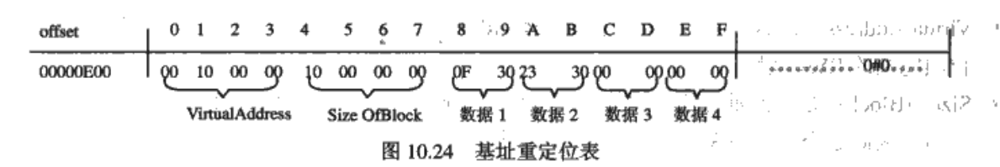
-
得到数据
-
virtualAddress：00001000h
- sizeOfBlock：00000010h（4个重定位数据：（10h-8h）/2h=4h）
-
重定位数据：
- 300Fh
- 3023h
- 0000h(用于对齐)
- 0000h(用于对齐)
-
重定位地址转换
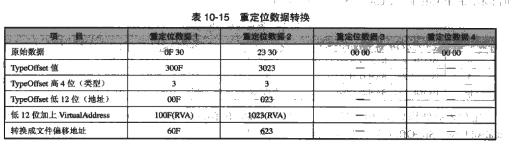
- 查看示例文件
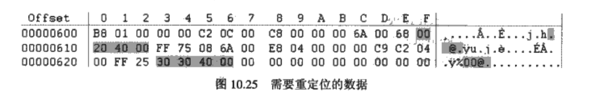
- 当PE加载器需要重定位地址的时候，会使用差值来修正以上地址中的数据
10.9 资源
分类：
- 加速键
- 位图
- 光标
- 对话框
- 图标
- 菜单
- 串表（string table）
- 工具栏
- 版本信息
- 等
10.9.1 资源结构
-
结构：3层目录
-
1层：根目录
- 2层：对应于资源类型
-
3层
-
目录结构图
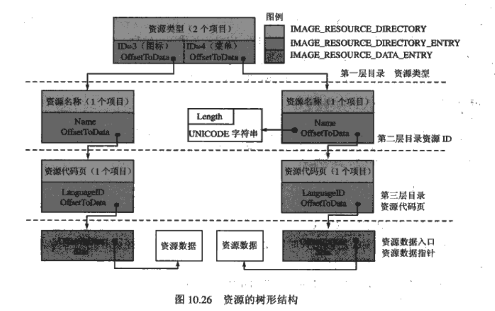
-
资源目录结构
-
数据目录表条目：struct IMAGE_DATA_DIRECTORY Resource，包含资源的RVA和大小
-
每一个节点的结构定义
c typedef struct _IMAGE_RESOURCE_DIRECTORY { DWORD Characteristics; DWORD TimeDateStamp; WORD MajorVersion; WORD MinorVersion; WORD NumberOfNamedEntries; //以字符串命名的资源数量 WORD NumberOfIdEntries; //以整形数字命令的资源数量 // IMAGE_RESOURCE_DIRECTORY_ENTRY DirectoryEntries[]; } IMAGE_RESOURCE_DIRECTORY, *PIMAGE_RESOURCE_DIRECTORY;总资源数（当前目录的总目录项数） = NumberOfNamedEntries + NumberOfIdEntries，即
_IMAGE_RESOURCE_DIRECTORY_ENTRY的数目 -
资源目录入口结构
c
typedef struct _IMAGE_RESOURCE_DIRECTORY_ENTRY {
union {
struct {
DWORD NameOffset:31;
DWORD NameIsString:1;
};
DWORD Name;
WORD Id;
};
union {
DWORD OffsetToData;
struct {
DWORD OffsetToDirectory:31;
DWORD DataIsDirectory:1;
};
};
} IMAGE_RESOURCE_DIRECTORY_ENTRY, *PIMAGE_RESOURCE_DIRECTORY_ENTRY;
字段的含义和层级有关系，层级不同，字段含义也不同
-
Name字段
-
第一层：定义资源类型
-
当资源以类似ID定义并且数值在1-16之间，表示系统预定义，如下
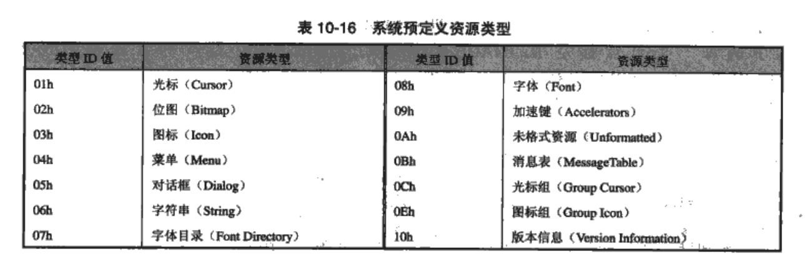
-
第二层：定义资源名称
-
第三层：定义代码页编号
-
最高位：
-
最高位为0：作为ID使用
-
最高为为1：做指针使用，指向_IMAGE_RESOURCE_DIR_STRING_U结构
c typedef struct _IMAGE_RESOURCE_DIR_STRING_U { WORD Length; WCHAR NameString[ 1 ]; } IMAGE_RESOURCE_DIR_STRING_U, *PIMAGE_RESOURCE_DIR_STRING_U;
-
-
OffsetToData字段
-
类型：指针
-
高位
-
高位为1：低位指向下一层目录块的地址
-
高位为0：指向_IMAGE_RESOURCE_DATA_ENTRY结构
注：当Name和OffsetToData字段做指针使用时：指的是从根目录开始的偏移量，而不是RVA
-
-
资源数据入口
经过三层_IMAGE_RESOURCE_DIRECTORY_ENTRY之后，offsetToData指向_IMAGE_RESOURCE_DATA_ENTRY，其结构如下：
c
typedef struct _IMAGE_RESOURCE_DATA_ENTRY {
DWORD OffsetToData;
DWORD Size;
DWORD CodePage;
DWORD Reserved;
} IMAGE_RESOURCE_DATA_ENTRY, *PIMAGE_RESOURCE_DATA_ENTRY;
_IMAGE_RESOURCE_DATA_ENTRY为真正的资源OffsetToData指向资源数据指针，为RVA
10.9.2 资源结构实例分析
以pediy.exe为例
-
得到资源起始位置：查看数据目录表，得到地址4000h
-
根目录
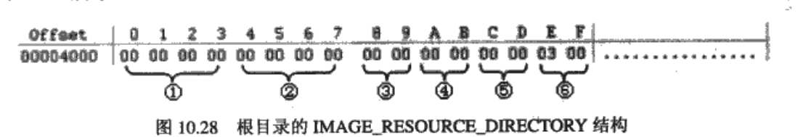
_IMAGE_RESOURCE_DIRECTORY_ENTRY的结构数据：
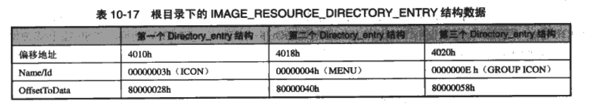
以第二个_IMAGE_RESOURCE_DIRECTORY_ENTRY为例，进入第二层
-
第二层目录
-
地址：4040h
-
总资源数（当前目录的总目录项数） = NumberOfNamedEntries + NumberOfIdEntries = 0+ 1 = 1
说明其后有一个
_IMAGE_RESOURCE_DIRECTORY_ENTRY -
_IMAGE_RESOURCE_DIRECTORY_ENTRY结构数据：- Name 800000E8h：
- 定义资源名称
- 最高位为1，用作指针，指向
_IMAGE_RESOURCE_DIR_STRING_U结构 _IMAGE_RESOURCE_DIR_STRING_U的地址 = 资源块首地址 + Name低位地址 = 4000h + E8h = 40E8h_IMAGE_RESOURCE_DIR_STRING_U数据：- length: 5
- NameString:
PEDIY
- OffToData 80000088h：
- 最高位为1：说明有下一层
- 低位数据88h: 指向第三层目录块
_IMAGE_RESOURCE_DIECTORY，地址 = 4000h+88h = 4088h
-
第三层
-
_IMAGE_RESOURCE_DIECTORY地址为：4088h -
_IMAGE_RESOURCE_DIECTORY结构：总资源数（当前目录的总目录项数） = NumberOfNamedEntries + NumberOfIdEntries = 0+ 1 =1
说明其后紧跟一个
_IMAGE_RESOURCE_DIRECTORY_ENTRY，偏移为4098h -
_IMAGE_RESOURCE_DIRECTORY_ENTRY结构：- name（表示代码页编号）:00000409h 代码页为英语
OffsetToData：- 高位为0：表明没有下一层
- 低位数据：0C8h，指向
_IMAGE_RESOURCE_DATA_ENTRY结构，地址为：4000h+08Ch = 408Ch
-
_IMAGE_RESOURCE_DATA_ENTRY结构：c DWORD OffsetToData; //00004400h DWORD Size; // 0000005Ah DWORD CodePage; DWORD Reserved;真实资源RVA = 4400h，大小为5A
10.9.3 资源编辑工具
- 资源类型
- VC类标准资源
- Delphi类标准资源
- 非标准的UNICODE资源（主要是一些VB编译程序）
- 工具
- vc++
- resource hacker
- exescope
10.10 TLS初始化
-
TLS（线程本地存储器）：将数据和执行的特定线程联系起来
-
声明TLS变量：__declspce(thread)，该变量将存放在.tls中
-
过程：
-
加载器寻找.tls区
- 动态分配足够大的内存，用来存储TLS变量
-
将指向该内存的指针，放在TLS数组中，该数组通过FS:[2Ch]访问
-
数据目录表项：
IMAGE_DIRECTORY_ENTRY_TLS -
文件头定义结构：
c
typedef struct _IMAGE_TLS_DIRECTORY32 {
DWORD StartAddressOfRawData; //内存起始地址
DWORD EndAddressOfRawData; //内存终止地址
DWORD AddressOfIndex; // 运行库使用这个索引来定位线程局部数据
DWORD AddressOfCallBacks; // PIMAGE_TLS_CALLBACK函数指针数组的地址
DWORD SizeOfZeroFill;
DWORD Characteristics;
} IMAGE_TLS_DIRECTORY32;
- AddressOfCallBacks
- 作用：线程建立和退出时的回调函数，列表中的每一个函数都将被执行
- 包括主线程和其他线程
- 运行时刻：TLS数据初始化和回调函数都在OEP之前执行，其为程序最开始运行的地方
- 特殊用途：病毒和外壳程序
- 结构中地址为虚拟地址，不是RVA
- 其不位于.tls中，位于.rdata中
10.11 调试目录
-
数据目录表：第七个条目，IMAGE_DIRECTORY_ENTRY_DEBUG
-
结构如下：
c
typedef struct _IMAGE_DEBUG_DIRECTORY {
DWORD Characteristics;
DWORD TimeDateStamp;
WORD MajorVersion;
WORD MinorVersion;
DWORD Type;
DWORD SizeOfData;
DWORD AddressOfRawData;
DWORD PointerToRawData;
} IMAGE_DEBUG_DIRECTORY, *PIMAGE_DEBUG_DIRECTORY;
- 普遍形式：pdb
10.12 延迟装入数据
-
延迟装入DLL：
-
通过LoadLibrary和GetProcessAddress获得延迟函数的地址
-
直接转向对延迟函数的调用
-
特征
-
不是操作系统的特征
-
通过链接器和运行库加入额外的代码来实现
-
数据目录表项： DelayLoadImportDescriptors
-
ImgDelayDescr的结构：
```c typedef struct ImgDelayDescr { DWORD grAttrs; // attributes LPCSTR szName; // pointer to dll name HMODULE * phmod; // address of module handle PImgThunkData pIAT; // address of the IAT PCImgThunkData pINT; // address of the INT PCImgThunkData pBoundIAT; // address of the optional bound IAT PCImgThunkData pUnloadIAT; // address of optional copy of original IAT DWORD dwTimeStamp; // 0 if not bound, // O.W. date/time stamp of DLL bound to (Old BIND) } ImgDelayDescr, * PImgDelayDescr;
typedef const ImgDelayDescr * PCImgDelayDescr;
// // Delay load import hook notifications // enum { dliStartProcessing, // used to bypass or note helper only dliNotePreLoadLibrary, // called just before LoadLibrary, can // override w/ new HMODULE return val dliNotePreGetProcAddress, // called just before GetProcAddress, can // override w/ new FARPROC return value dliFailLoadLib, // failed to load library, fix it by // returning a valid HMODULE dliFailGetProc, // failed to get proc address, fix it by // returning a valid FARPROC dliNoteEndProcessing, // called after all processing is done, no // no bypass possible at this point except // by longjmp()/throw()/RaiseException. }; ```
- 包含对应DLL的IAT和INT
- 由运行库代码写入和读出
- 过程：
- 第一次调用API函数
- 运行库调用LoadLibrary
- 接着调用GetProcessAddress
- 最后地址装入延迟装入的IAT
- 以后每次调用直接来到IAT
- 所有地址都是虚地址
10.13 程序异常数据
-
基于表的异常处理
-
表中包含每一个可能受到异常展开影响的函数信息
包含内容：
- 起始地址
- 结束地址
- 异常应该如何处理
-
在什么地方被执行
-
异常发生时，遍历这个表，找到合适的入口，并执行
-
数据成员结构：
c
typedef struct _IMAGE_RUNTIME_FUNCTION_ENTRY {
DWORD BeginAddress;
DWORD EndAddress;
DWORD UnwindInfoAddress;
} _IMAGE_RUNTIME_FUNCTION_ENTRY, *_PIMAGE_RUNTIME_FUNCTION_ENTRY;
10.14 .Net头部
-
.Net环境组成：
-
公共语言运行环境CLR（将其看作虚拟机）
-
.net框架类库
-
.net文件主要目的：
获得.net特定的装入内存的信息：
- metadata 元数据
-
IL（Intermediate Language）中间语言
-
程序执行：
-
跳转到Mscoree.dll中的
_coreExeMain或者_coreDllMain -
Mscoree.dll开始使用metadata和IL
-
程序目录表项：struct IMAGE_DATA_DIRECTORY
COMRuntimedescriptor
10.15 编写PE分析工具
定义文件结构：
typedef struct _MAP_FILE_STRUCT
{
HANDLE hFile;
HANDLE hMapping;
LPVOID ImageBase;
} MAP_FILE_STRUCT,* PMAP_FILE_STRUCT;
10.15.1 文件格式检查
BOOL IsPEFile(LPVOID ImageBase)
{
PIMAGE_DOS_HEADER pDH=NULL;
PIMAGE_NT_HEADERS pNtH=NULL;
if(!ImageBase) //判断映像基址
return FALSE;
pDH=(PIMAGE_DOS_HEADER)ImageBase;
if(pDH->e_magic!=IMAGE_DOS_SIGNATURE) //判断是否为MZ
return FALSE;
pNtH=(PIMAGE_NT_HEADERS32)((DWORD)pDH+pDH->e_lfanew); //判断是否为PE
if (pNtH->Signature != IMAGE_NT_SIGNATURE )
return FALSE;
return TRUE;
}
10.15.2 FileHeader和OptionalHeader内容的读取
- GetNtHeaders
```c PIMAGE_NT_HEADERS GetNtHeaders(LPVOID ImageBase) {
if(!IsPEFile(ImageBase))
return NULL;
PIMAGE_NT_HEADERS pNtH;
PIMAGE_DOS_HEADER pDH;
pDH=(PIMAGE_DOS_HEADER)ImageBase;
pNtH=(PIMAGE_NT_HEADERS)((DWORD)pDH+pDH->e_lfanew);
return pNtH;
}
```
- GetFileHeader
```c PIMAGE_FILE_HEADER GetFileHeader(LPVOID ImageBase) { PIMAGE_DOS_HEADER pDH=NULL; PIMAGE_NT_HEADERS pNtH=NULL; PIMAGE_FILE_HEADER pFH=NULL;
if(!IsPEFile(ImageBase))
return NULL;
pDH=(PIMAGE_DOS_HEADER)ImageBase;
pNtH=(PIMAGE_NT_HEADERS)((DWORD)pDH+pDH->e_lfanew);
pFH=&pNtH->FileHeader;
return pFH;
} ```
- GetOptionalHeader
```c PIMAGE_OPTIONAL_HEADER GetOptionalHeader(LPVOID ImageBase) { PIMAGE_DOS_HEADER pDH=NULL; PIMAGE_NT_HEADERS pNtH=NULL; PIMAGE_OPTIONAL_HEADER pOH=NULL;
if(!IsPEFile(ImageBase))
return NULL;
pDH=(PIMAGE_DOS_HEADER)ImageBase;
pNtH=(PIMAGE_NT_HEADERS)((DWORD)pDH+pDH->e_lfanew);
pOH=&pNtH->OptionalHeader;
return pOH;
} ```
- 显示文件头信息
```c
void ShowFileHeaderInfo(HWND hWnd)
{
char cBuff[10];
PIMAGE_FILE_HEADER pFH=NULL;
pFH=GetFileHeader(stMapFile.ImageBase);
if(!pFH)
{
MessageBox(hWnd,"Can't get File Header ! :(","PEInfo_Example",MB_OK);
return;
}
wsprintf(cBuff, "%04lX", pFH->Machine);
SetDlgItemText(hWnd,IDC_EDIT_FH_MACHINE,cBuff);
wsprintf(cBuff, "%04lX", pFH->NumberOfSections);
SetDlgItemText(hWnd,IDC_EDIT_FH_NUMOFSECTIONS,cBuff);
wsprintf(cBuff, "%08lX", pFH->TimeDateStamp);
SetDlgItemText(hWnd,IDC_EDIT_FH_TDS,cBuff);
wsprintf(cBuff, "%08lX", pFH->PointerToSymbolTable);
SetDlgItemText(hWnd,IDC_EDIT_FH_PTSYMBOL,cBuff);
wsprintf(cBuff, "%08lX", pFH->NumberOfSymbols);
SetDlgItemText(hWnd,IDC_EDIT_FH_NUMOFSYM,cBuff);
wsprintf(cBuff, "%04lX", pFH->SizeOfOptionalHeader);
SetDlgItemText(hWnd,IDC_EDIT_FH_SIZEOFOH,cBuff);
wsprintf(cBuff, "%04lX", pFH->Characteristics);
SetDlgItemText(hWnd,IDC_EDIT_FH_CHARACTERISTICS,cBuff);
} ```
10.15.3 得到数据目录表信息
void ShowDataDirInfo(HWND hDlg)
{
char cBuff[9];
PIMAGE_OPTIONAL_HEADER pOH=NULL;
pOH=GetOptionalHeader(stMapFile.ImageBase);
if(!pOH)
return;
for(int i=0;i<16;i++)
{
wsprintf(cBuff, "%08lX", pOH->DataDirectory[i].VirtualAddress);
SetDlgItemText(hDlg,EditID_Array[i].ID_RVA,cBuff);
wsprintf(cBuff, "%08lX", pOH->DataDirectory[i].Size);
SetDlgItemText(hDlg,EditID_Array[i].ID_SIZE,cBuff);
}
}
10.15.4 得到区块表信息
void ShowSectionHeaderInfo(HWND hDlg)
{
LVITEM lvItem;
char cBuff[9],cName[9];
WORD i;
PIMAGE_FILE_HEADER pFH=NULL;
PIMAGE_SECTION_HEADER pSH=NULL;
pFH=GetFileHeader(stMapFile.ImageBase);
if(!pFH)
return;
pSH=GetFirstSectionHeader(stMapFile.ImageBase);
for( i=0;i<pFH->NumberOfSections;i++)
{
memset(&lvItem, 0, sizeof(lvItem));
lvItem.mask = LVIF_TEXT;
lvItem.iItem = i;
memset(cName,0,sizeof(cName));
memcpy(cName, pSH->Name, 8);
lvItem.pszText = cName;
SendDlgItemMessage(hDlg,IDC_SECTIONLIST,LVM_INSERTITEM,0,(LPARAM)&lvItem);
lvItem.pszText = cBuff;
wsprintf(cBuff, "%08lX", pSH->VirtualAddress);
lvItem.iSubItem = 1;
SendDlgItemMessage(hDlg,IDC_SECTIONLIST, LVM_SETITEM, 0, (LPARAM)&lvItem);
...
++pSH;
}
10.15.5 得到输出表信息
void ShowExportFuncsInfo(HWND hDlg)
{
HWND hList;
LVITEM lvItem;
char cBuff[10], *szFuncName;
UINT iNumOfName=0;
PDWORD pdwRvas, pdwNames;
PWORD pwOrds;
UINT i=0,j=0,k=0;
BOOL bIsByName=FALSE;;
PIMAGE_NT_HEADERS pNtH=NULL;
PIMAGE_EXPORT_DIRECTORY pExportDir=NULL;
pNtH=GetNtHeaders(stMapFile.ImageBase);
if(!pNtH)
return ;
pExportDir= (PIMAGE_EXPORT_DIRECTORY)GetExportDirectory(stMapFile.ImageBase);
if (!pExportDir)
return ;
pwOrds = (PWORD)RvaToPtr(pNtH, stMapFile.ImageBase,pExportDir->AddressOfNameOrdinals);
pdwRvas = (PDWORD)RvaToPtr(pNtH, stMapFile.ImageBase,pExportDir->AddressOfFunctions);
pdwNames = (PDWORD)RvaToPtr(pNtH, stMapFile.ImageBase,pExportDir->AddressOfNames);
if(!pdwRvas)
return;
hList=GetDlgItem(hDlg,IDC_EXPORT_LIST);
SendMessage(hList,LVM_SETEXTENDEDLISTVIEWSTYLE,0,(LPARAM)LVS_EX_FULLROWSELECT);
iNumOfName=pExportDir->NumberOfNames;
for( i=0;i<pExportDir->NumberOfFunctions;i++)
{
if(*pdwRvas)
{
for( j=0;j<iNumOfName;j++)
{
if(i==pwOrds[j])
{
bIsByName=TRUE;
szFuncName=(char*)RvaToPtr(pNtH,stMapFile.ImageBase,pdwNames[j]);
break;
}
bIsByName=FALSE;
}
//show funcs to listctrl
memset(&lvItem, 0, sizeof(lvItem));
lvItem.mask = LVIF_TEXT;
lvItem.iItem = k;
lvItem.pszText = cBuff;
wsprintf(cBuff, "%04lX", (UINT)(pExportDir->Base+i));
SendDlgItemMessage(hDlg,IDC_EXPORT_LIST,LVM_INSERTITEM,0,(LPARAM)&lvItem);
lvItem.pszText = cBuff;
wsprintf(cBuff, "%08lX", (*pdwRvas));
lvItem.iSubItem = 1;
SendDlgItemMessage(hDlg,IDC_EXPORT_LIST, LVM_SETITEM, 0, (LPARAM)&lvItem);
if(bIsByName)
lvItem.pszText=szFuncName;
else
lvItem.pszText = "-";
lvItem.iSubItem = 2;
SendDlgItemMessage(hDlg,IDC_EXPORT_LIST, LVM_SETITEM, 0, (LPARAM)&lvItem);
//
++k;
}
++pdwRvas;
}
10.15.6 得到输入表信息
- 找到输入表的位置
PIMAGE_IMPORT_DESCRIPTOR GetFirstImportDesc(LPVOID ImageBase)
{
PIMAGE_IMPORT_DESCRIPTOR pImportDesc;
pImportDesc=(PIMAGE_IMPORT_DESCRIPTOR)GetDirectoryEntryToData(ImageBase,IMAGE_DIRECTORY_ENTRY_IMPORT);
if(!pImportDesc)
return NULL;
return pImportDesc;
}
- 循环输出整个表
void ShowImportDescInfo(HWND hDlg)
{
HWND hList;
LVITEM lvItem;
char cBuff[10], * szDllName;
PIMAGE_NT_HEADERS pNtH=NULL;
PIMAGE_IMPORT_DESCRIPTOR pImportDesc=NULL;
memset(&lvItem, 0, sizeof(lvItem));
hList=GetDlgItem(hDlg,IDC_IMPORT_LIST);
SendMessage(hList,LVM_SETEXTENDEDLISTVIEWSTYLE,0,(LPARAM)LVS_EX_FULLROWSELECT);
pNtH=GetNtHeaders(stMapFile.ImageBase);
pImportDesc=GetFirstImportDesc(stMapFile.ImageBase);
if(!pImportDesc)
{
MessageBox(hDlg,"Can't get ImportDesc:(","PEInfo_Example",MB_OK);
return;
}
int i=0;
while(pImportDesc->FirstThunk)
{
memset(&lvItem, 0, sizeof(lvItem));
lvItem.mask = LVIF_TEXT;
lvItem.iItem = i;
szDllName=(char*)RvaToPtr(pNtH,stMapFile.ImageBase,pImportDesc->Name);
...
++i;
++pImportDesc;
}
}